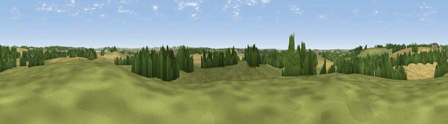

Viewpoint near Birdingbury
#34072 in England · top 65% of its area beats it · near BirdingburyThe view, rendered

A 360° render of this exact spot computed from the terrain model, tree cover and land cover — summer colours, afternoon light, calibrated against photographs of famous viewpoints. Real trees, hedges and buildings will differ in detail.
The panorama
Grey silhouette: terrain skyline in each direction (720 bearings, Earth curvature and refraction included). Dashed green: skyline with trees (+15 m) and buildings (+8 m) as obstacles. Blue strip: how far the ground is visible on each bearing.
Where the view opens
Wedge length = distance to the farthest visible ground on that bearing (vegetation-aware). Rings at 10, 25 and 50 km.
What fills the view
46% grassland · 35% cropland · 18% woodland ·
Angular shares of the visible panorama (visual magnitude), not map area. Landscape diversity 0.48 (0–1 Shannon).
Key numbers
More beautiful places nearby
The staircase of upgrades: each row has a higher view potential than everything closer. Driving times are estimates from straight-line distance, calibrated against real road routing — check an actual route before setting out.
| Place | Direction | Drive | Score |
|---|---|---|---|
| Hensborough Hill | E · 2 km | ~6 min | 45.1 |
| Viewpoint near Onley | E · 9 km | ~17 min | 56.1 |
| Viewpoint near Lower Shuckburgh | SE · 9 km | ~18 min | 59.9 |
| Viewpoint near Lower Shuckburgh | SE · 9 km | ~18 min | 61.6 |
| Beacon Hill | SSE · 9 km | ~19 min | 62.2 |
| Big Hill - Staverton Clump | SE · 13 km | ~25 min | 68.4 |
| Viewpoint near Northend | SSW · 18 km | ~31 min | 69.7 |
| Viewpoint near Northend | SSW · 18 km | ~31 min | 70.3 |
52.31713, -1.35777 · source: screening · position refined by local search. Computed location — check access rights before visiting.